fMRI noise is autocorrelated: what the scanner records at one volume predicts part of what it records at the next. Ordinary least squares (OLS) ignores this. Its coefficient estimates remain unbiased, but its standard errors come out too small. Its t statistics are then too large, and a 5% threshold passes more than 5% of the voxels that have no real effect.
Prewhitening fixes this. Estimate the autocorrelation from the residuals of a first OLS fit, and build a filter that turns the noise into white noise, meaning noise with no autocorrelation. Pass both the data and the design matrix through that filter, then fit again. fmriAR does the estimation and the filtering. This vignette works through the steps on simulated data, where the right answers are known, so every result can be checked.
A simulated study
The study has two five-minute runs of 150 volumes each, at a repetition time (TR) of 2 seconds. The task is a series of brief events 12 to 20 seconds apart, convolved with a canonical haemodynamic response. As in most fMRI models, the design also has an intercept and three slow cosine drift terms for each run.
library(fmriAR)
set.seed(2024)
TR <- 2
n_per_run <- 150
runs <- rep(1:2, each = n_per_run) # a run label for every volume
n_time <- length(runs)
# Brief events 12-20 s apart, convolved with a canonical HRF
hrf <- function(t) dgamma(t, 6) - dgamma(t, 16) / 6
h <- hrf(seq(0, 30, by = TR))
event_regressor <- function(n) {
onsets <- cumsum(sample(6:10, n, replace = TRUE))
stim <- tabulate(onsets[onsets <= n], nbins = n)
x <- stats::filter(stim, h / max(h), sides = 1)
as.numeric(replace(x, is.na(x), 0))
}
# Three slow cosines per run absorb scanner drift
cosines <- function(n, k) {
sapply(seq_len(k), function(j) cos(pi * j * (seq_len(n) - 0.5) / n))
}
none <- matrix(0, n_per_run, 3)
X <- cbind(c(event_regressor(n_per_run), event_regressor(n_per_run)),
runs == 1, runs == 2,
rbind(cosines(n_per_run, 3), none),
rbind(none, cosines(n_per_run, 3)))
colnames(X) <- c("task", "run1", "run2", paste0("drift", 1:6))The noise in each voxel is a first-order autoregressive process, AR(1), with coefficient 0.5: each volume’s noise is half the previous volume’s plus a fresh random shock. Each run is simulated separately, so no noise carries over from one run to the next. One voxel in ten responds to the task. The other 9,000 are null voxels, with no effect at all; counting how many of them pass a threshold gives the false-positive rate.
The problem: OLS on autocorrelated noise
Fit OLS to every voxel and compute a t statistic for the
task. Given the unwhitened design and data,
sandwich_from_whitened_resid() returns the ordinary OLS
standard errors.
ols <- lm.fit(X, Y)
se_ols <- sandwich_from_whitened_resid(X, Y, beta = ols$coefficients)$se
t_ols <- ols$coefficients["task", ] / se_ols[1, ]
# Share of null voxels that pass |t| > 1.96
mean(abs(t_ols[null]) > 1.96)
#> [1] 0.111The threshold promises 5%. OLS delivers 11.1%.
Step 1: Estimate the noise model
fit_noise() estimates the autocorrelation from the OLS
residuals and fits an autoregressive model to it. By default it chooses
the model order by the Bayesian information criterion, BIC
(p = "auto"), and pools all voxels and runs into one model
(pooling = "global"). It never pairs a volume in one run
with a volume in another.
plan <- fit_noise(ols$residuals, runs = runs, design = X)
plan
#> fmriAR whitening plan
#> Method: AR
#> Orders: p = 1, q = 0
#> Pooling: global
#> Runs: 2 (1, 2)
#> Segment start: exact stationary
#> Coefficients:
#> global: phi = 0.5The result is a whitening plan: the fitted noise model, in
the form whiten_apply() takes. BIC chose AR(1) and
estimated its coefficient at 0.50; the truth is 0.5.
Pass design = X whenever the residuals come from a
fitted model. Fitting removes some of the noise along with the effects
being modelled, so the residuals look less autocorrelated than the noise
really is. The bias grows with the size of the design, and slow
regressors cause most of it: drift terms above all, but also motion
parameters. design = X corrects it. Without the correction,
a fit that pools thousands of voxels can also choose an AR order that is
too high; fit_noise() warns when its search reaches the
highest order allowed. Refining the noise model
(vignette("fmriAR-noise-models")) demonstrates both
problems.
Step 2: Whiten the design and the data
whiten_apply() runs the filter down every column of
X and Y, restarting it at the beginning of
each run. It returns whitened copies and leaves your inputs
unchanged.
w <- whiten_apply(plan, X, Y, runs = runs)For an AR(1), the filter is a single subtraction: each whitened value is the original value minus 0.50 times the value one volume earlier. That removes the part of the noise the previous volume predicts and leaves the fresh shock. The first volume of each run has no predecessor, so instead it is multiplied by , where is the AR coefficient. That makes the result exact generalised least squares (GLS) for the fitted noise model.
The design must go through the same filter. The model says data = design × coefficients + noise. Filtering both sides with the same filter leaves the equation, and its coefficients, intact; only the noise changes, and it becomes white.
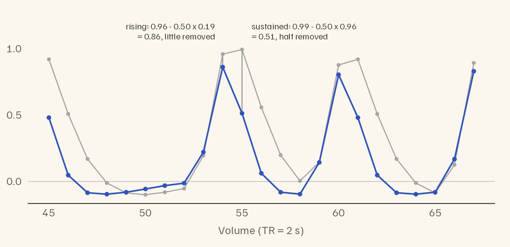
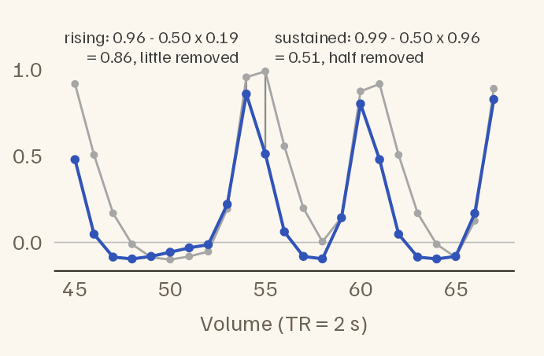
The task regressor before (grey) and after (blue) whitening, one dot per volume, around one event in run 1. Each blue value is the grey value minus half the grey value one volume earlier; two volumes are worked through. Every voxel’s data goes through the same filter.
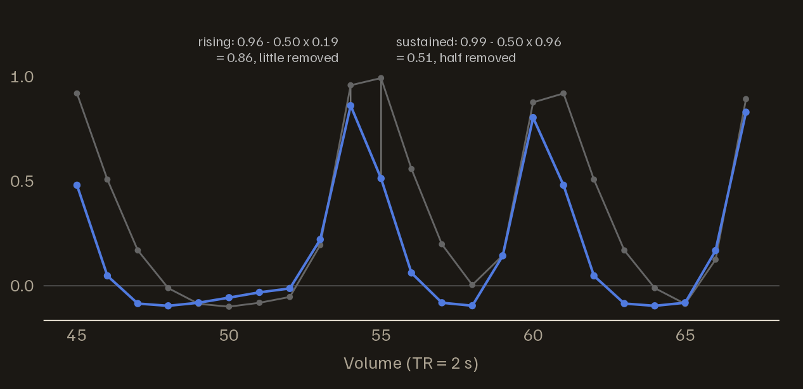
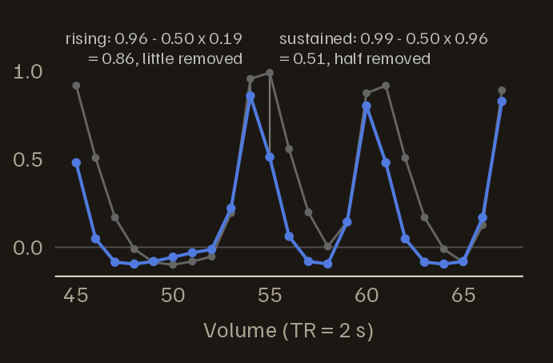
The whitened regressor peaks one volume earlier than the original, falls faster, and dips below zero after each response. A rising volume keeps most of its value, a volume that repeats its predecessor loses half, and a falling volume goes negative. Whitening keeps the changes in a signal and discounts its slow, sustained parts, because slow fluctuations are exactly what autocorrelated noise produces on its own.
Step 3: Refit and compute standard errors
Fit the whitened data on the whitened design. Once the noise is white, the ordinary standard-error formula is the right one.
gls <- lm.fit(w$X, w$Y)
se_gls <- sandwich_from_whitened_resid(w$X, w$Y, beta = gls$coefficients)$se
t_gls <- gls$coefficients["task", ] / se_gls[1, ]Because the simulation records which voxels have an effect, each fit can be scored against the truth. Over the 9,000 null voxels, the reported standard error should match the actual spread of the estimates, and 5% of the voxels should pass the threshold. The last two columns measure sensitivity: the share of the 1,000 active voxels that pass at 1.96, and the share that pass when each method’s threshold is set so that exactly 5% of its null voxels pass.
summarise_fit <- function(b, se) {
c(`reported SE` = mean(se[1, null]),
`actual SD` = sd(b["task", null]),
`false positive` = mean(abs(b["task", null] / se[1, null]) > 1.96),
`true positive` = mean(abs(b["task", active] / se[1, active]) > 1.96),
`at matched 5%` = mean(abs(b["task", active] / se[1, active]) >
quantile(abs(b["task", null] / se[1, null]), 0.95)))
}
knitr::kable(
rbind(OLS = summarise_fit(ols$coefficients, se_ols),
whitened = summarise_fit(gls$coefficients, se_gls)),
digits = 3,
caption = "The task effect estimated by OLS and after prewhitening, scored against the simulation's truth."
)| reported SE | actual SD | false positive | true positive | at matched 5% | |
|---|---|---|---|---|---|
| OLS | 0.168 | 0.207 | 0.111 | 0.793 | 0.673 |
| whitened | 0.191 | 0.192 | 0.050 | 0.749 | 0.749 |
OLS reports a standard error well below the actual spread of its estimates, and its false-positive rate is 2.2 times the nominal 5%. After prewhitening, reported and actual agree, and the rate is back near 5%. Whitening costs no real sensitivity. Its estimates vary less, because GLS is the more efficient estimator, and when both methods are held to the same 5% false-positive rate, whitening finds more of the active voxels. OLS’s higher raw true-positive rate comes entirely from the too-small standard error that also produced its false positives.
In relative terms, the excess grows as the threshold tightens. At 0.1%, the kind of strict threshold that whole-brain analyses use, OLS passes 7 times the nominal rate.
rejection_rate <- function(t, alpha) mean(abs(t[null]) > qnorm(1 - alpha / 2))
alpha <- c(0.05, 0.01, 0.001)
pct <- function(x) sprintf("%.2f%%", 100 * x)
knitr::kable(
data.frame(threshold = pct(alpha),
OLS = pct(sapply(alpha, rejection_rate, t = t_ols)),
whitened = pct(sapply(alpha, rejection_rate, t = t_gls))),
align = "rrr",
caption = "Share of null voxels declared significant at each threshold."
)| threshold | OLS | whitened |
|---|---|---|
| 5.00% | 11.10% | 4.96% |
| 1.00% | 3.70% | 1.11% |
| 0.10% | 0.74% | 0.12% |
The distribution of the null t statistics shows where the excess comes from. Under OLS it is wider than the standard normal that the threshold assumes; after whitening it matches.
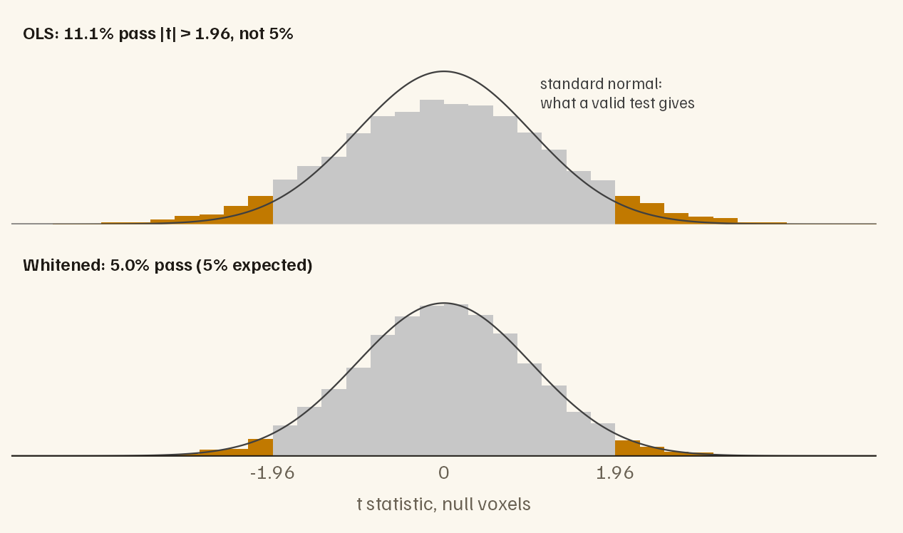
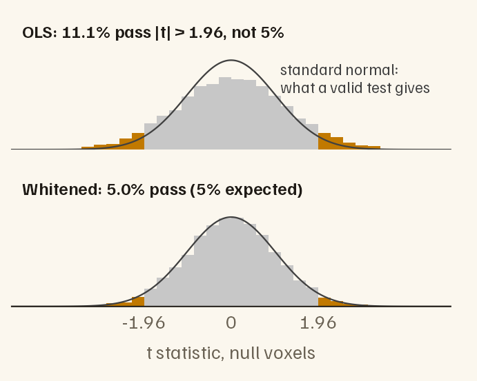
The task t statistic in the 9,000 null voxels. The curve is the standard normal distribution that a valid test assumes. Orange bars, where |t| > 1.96, are false positives.
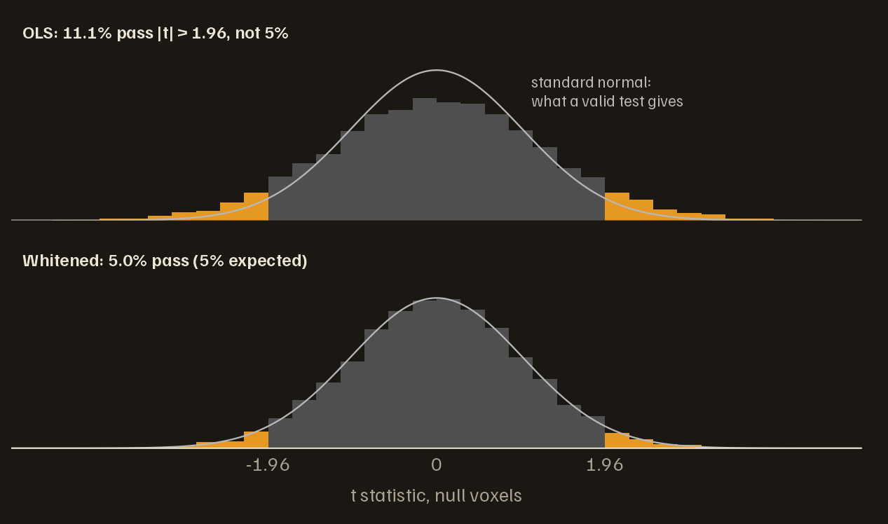
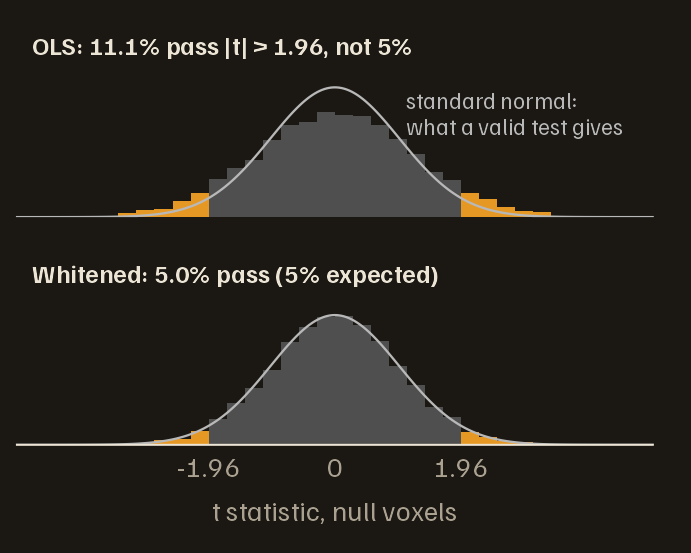
Step 4: The whiteness check
If the filter matches the noise, the residuals of the whitened fit
are white: a voxel’s residual at one volume says nothing about its
residual at the next. acorr_diagnostics() measures each
voxel’s autocorrelation at lags 1, 2, …, centring each run separately
and never pairing volumes across a run boundary.
resid_w <- w$Y - w$X %*% gls$coefficients
ac_before <- acorr_diagnostics(ols$residuals, runs = runs, max_lag = 10,
aggregate = "none")
ac_after <- acorr_diagnostics(resid_w, runs = runs, max_lag = 10,
aggregate = "none")What should white residuals look like?
acorr_diagnostics() returns ci,
for
volumes: the textbook range that holds 95% of a white-noise series’
autocorrelations. Residuals of a fitted model are not quite that,
though. Fitting pulls their autocorrelations slightly below zero, more
so the more regressors each run has. The exact reference is easy to get:
put pure white noise through the same fit and see where its
autocorrelations fall. That range is the white-noise band.
white <- matrix(rnorm(n_time * 2000), n_time)
ac_white <- acorr_diagnostics(qr.resid(qr(w$X), white), runs = runs,
max_lag = 10, aggregate = "none")
band <- apply(ac_white$acf, 1, quantile, probs = c(0.025, 0.975))
# Share of voxels whose lag-1 autocorrelation falls outside the band
outside <- function(ac) mean(ac$acf[1, ] < band[1, 1] | ac$acf[1, ] > band[2, 1])
c(before = outside(ac_before), after = outside(ac_after))
#> before after
#> 1.000 0.047The band describes one voxel, so compare it with the spread of autocorrelations across voxels, not with their average, which varies far less. Before whitening, every voxel’s lag-1 autocorrelation lies outside the band. After whitening, 4.7% do: what white noise gives.
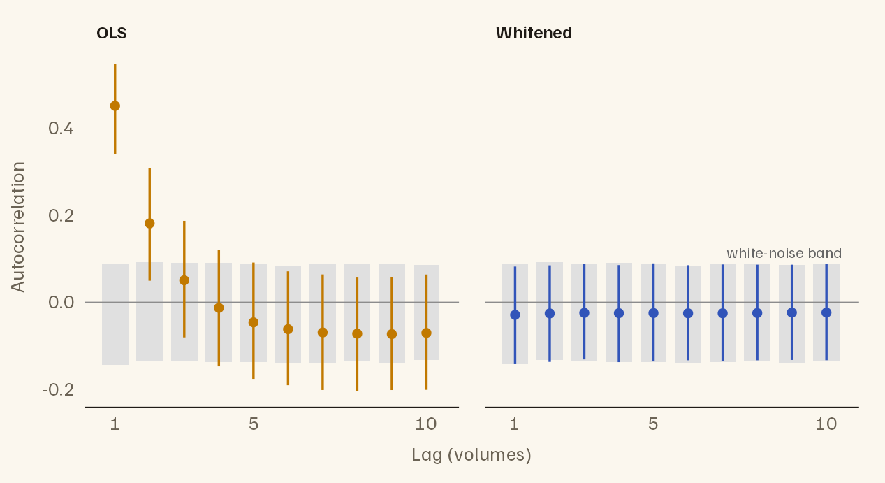
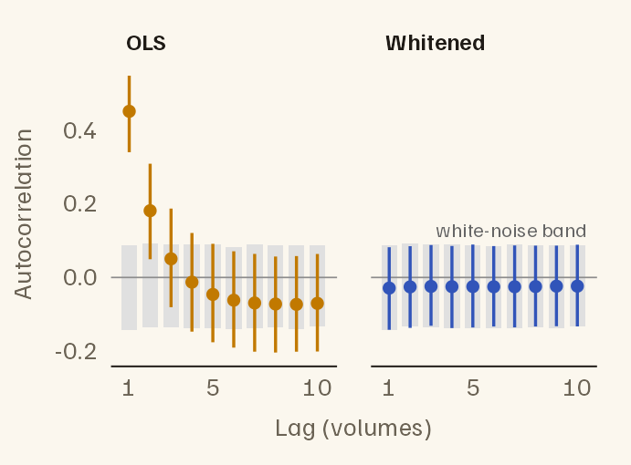
Autocorrelation of each voxel’s residuals at lags 1 to 10, after OLS (left) and after whitening (right). Lines span the middle 95% of the 10,000 voxels; dots mark the median. Grey boxes are the white-noise band: where 95% of the values fall for white noise put through the same fit.
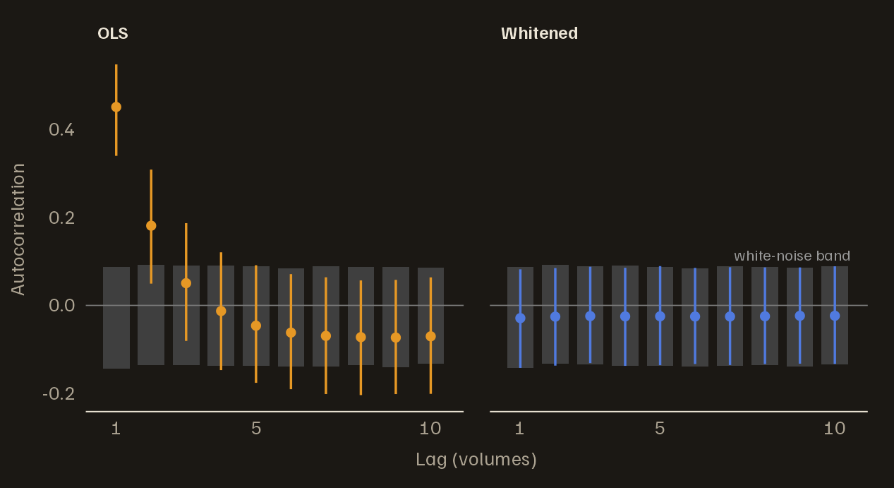
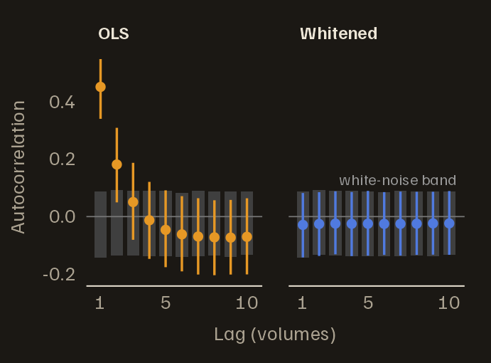
The whitened autocorrelations centre slightly below zero, at about
-0.03, and so does the band: that offset comes from fitting the model,
not from the noise. Against the textbook range
ci,
which ignores it, about 8% of whitened voxels would look like failures
at lag 1. The OLS residuals at lags 5 to 10 are also negative, for the
same reason.
If some autocorrelation remains, for example because the AR order was
too low,
sandwich_from_whitened_resid(..., type = "hac", runs = runs)
gives standard errors that tolerate it (Newey–West, computed within
runs).
Common situations
Several runs
pooling = "global" (the default) fits one noise model to
all runs. pooling = "run" gives each run its own
coefficients, for runs whose noise may differ, such as runs from
different sessions or sequences.
plan_by_run <- fit_noise(ols$residuals, runs = runs, design = X,
pooling = "run")
plan_by_run$phi
#> $`1`
#> [1] 0.4997175
#>
#> $`2`
#> [1] 0.5012036Censored volumes
Pass volumes flagged for motion (scrubbed volumes) as
censor, either as indices or as a logical vector with one
entry per volume. They are left out of the noise estimate, and the
filter restarts after each one so that no flagged value leaks into its
neighbours.
Censoring the noise estimate is not enough on its own, though: the
first OLS fit still sees the flagged volumes, and a large artefact there
shifts the fitted coefficients and so every residual. Give the first fit
one spike regressor per flagged volume, which makes their residuals
exactly zero, and pass that design to fit_noise(). The
whitened output keeps every row and lists the censored rows in
censor; drop them before the final fit, which needs no
spike regressors.
scrub <- c(50:52, 170)
spikes <- outer(seq_len(n_time), scrub, "==") * 1 # one column per volume
X_s <- cbind(X, spikes)
plan_c <- fit_noise(lm.fit(X_s, Y)$residuals, runs = runs, design = X_s,
censor = scrub)
w_c <- whiten_apply(plan_c, X, Y, runs = runs)
keep <- setdiff(seq_len(n_time), w_c$censor)
fit_c <- lm.fit(w_c$X[keep, ], w_c$Y[keep, ])whiten_apply() reuses the plan’s censored volumes when
the data have the length the plan was fitted on, as here; otherwise pass
censor yourself.
One call
whiten() fits the OLS model, estimates the noise model
and whitens, all in one step. It corrects for X itself,
since it formed the residuals from it. Other arguments after
censor go to fit_noise().
w1 <- whiten(X, Y, runs = runs)Where next
-
Refining the noise model
(
vignette("fmriAR-noise-models")): whydesign = Xmatters, choosing the AR order, robust standard errors, ARMA models, and AFNI-style restricted models. -
Noise that varies across the brain
(
vignette("fmriAR-parcels")): separate noise models for parcels, steadied by pooling across spatial scales.